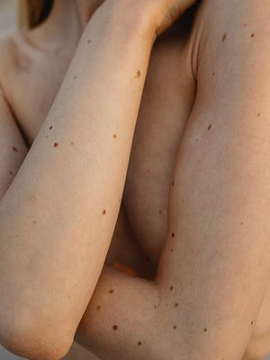

INHERITED TRACES

Taken
04.16.2023
𒊹
I have a crescent-shaped birthmark on my left wrist that has been there since I was a baby.
As a child, I would trace its curve with my finger, imagining it was a moon glowing just for me.
Around age eight, I started to see it as my own little symbol of luck, believing it brought me good fortune.
Now, every time I catch a glimpse of it, I smile, remembering those carefree days of imagination.